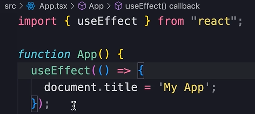
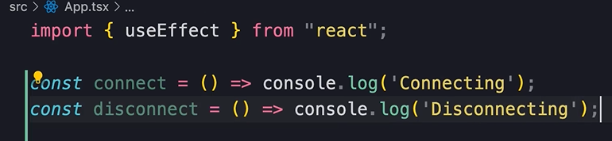
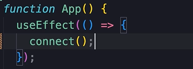
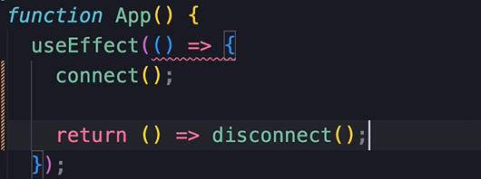
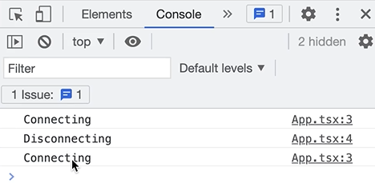

HOME
Effect Clean Up
Sometimes our code doesn't need any clean up. Like here, we are simply
setting the title.

But what if this was a chat component and here we were connecting to a
chat server?
At some point we need to disconnect from the chat server. For example,
if the user navigates away from the chat page.
Let's see how we can do this.
Simulating a server connection
Let's write a couple of functions to simulate connecting, and
disconnecting from a server...

So we connect...

To provide cleanup code, we return a function, and call the disconnect
func...

So the function we pass to the effect hook can optionally return a
function for cleaning up.
💡 This is not always necessary, but if we need to do cleanup, this is
how we do it.
IMPORTANT INFO
Generally speaking, the cleanup func should undo whatever the effect
was doing.
For example, if we are connecting, or subscribing to something, our
cleanup func should disconnect or unsubscribe.
As another example, if we are showing a modal here, our cleanup func
should hide the modal.
Or if we are fetching some data from the server in the effect, our
cleanup func should either abort the fetch, or ignore the result.
We'll look at an example of that later in this section.
Seeing how it works
You can see that we get 3 messages...

You learned about the strict mode in dev mode.
Well, before it got rendered the second time, the disconnect function
was executed.